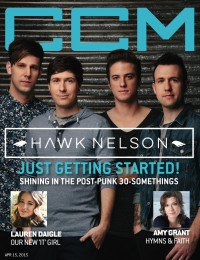

Hawk NelsonOn the cover|  | 15 April 2015
CCM Digital | Media coverage:- Sep 2004 in HM "Hawk Nelson", by David Stagg
- Oct 2004 in CCM "Ones to Watch: Extremely Glad to Be Here", by Kelly O'Neil
- Jan 2006 in CCM "Insider: To Whom It May Concern", by Tony Shore, Andre Salles
- Mar 2006 in Ignite Your Faith "I Needed to Find Myself", by Todd Hertz
- Apr 2006 in CCM "!Pop Punk", by Tony Shore
- Apr 2006 in CCM "!Television", by Robin Parrish
- May 2006 in HM "Hawk Nelson", by Mark Fisher
- May 2006 in CCM "Its The End of the World... And It Keeps Getting Better", by David McCreary
- Jun 2006 in CCM "Guide To Gear: Rock from the Great White North", by Russ Long
- Sep 2006 in CCM "Standing Room Only: Smile, It's The End of the World Tour", by Andy Argyrakis
- Feb 2007 in CCM "5 Questions With: Hawk Nelson, Jonathan Steingard"
- Mar 2007 in CCM "Things I ♥: Hawk Nelson (Daniel Biro)"
- Mar 2008 in Ignite Your Faith "Have Fun, Be Real", by Andy Argyrakis
- Mar 2008 in HM "What Kids Want To Say", by Bear Frazer
- Jan 2011 in CCM Digital "Musicians Corner: In the Studio: Hawk Nelson", by Andrew Greer
- Mar 2011 in CCM Digital "Still Crazy", by Andy Argyrakis
- Dec 2011 in HM "Hardnews: Quick & Concise: Hawk Nelson Singer Flies Solo"
- Apr 2013 in CCM Digital "Made-Over: New Face, New Sound, Renewed Passion", by Grace S. Aspinwall
- Mar 2015 in HM "Back Again For The First Time", by Sarah Dos Santos
- 15 Apr 2015 in CCM Digital "Rock Solid", by Grace S. Aspinwall
Albums & reviews:2004: Letters to the President2005: Letters to the President Special Edition2006: Smile, It's the End of the World2006: Gloria EP2008: Hawk Nelson Is My Friend2009: Live Life Loud2009: Summer EP2010: Hawkology2011: Crazy Love2011: Christmas2012: The Songs You've Already Heard: Best of Hawk Nelson2013: Made2015: Diamonds Award Summary (Nominations / Wins)Dove Awards2007 Dove Awards2009 Dove Awards- Recorded Music Packaging: Hawk Nelson Is My Friend
2010 Dove Awards2012 Dove AwardsGrammy Awards |